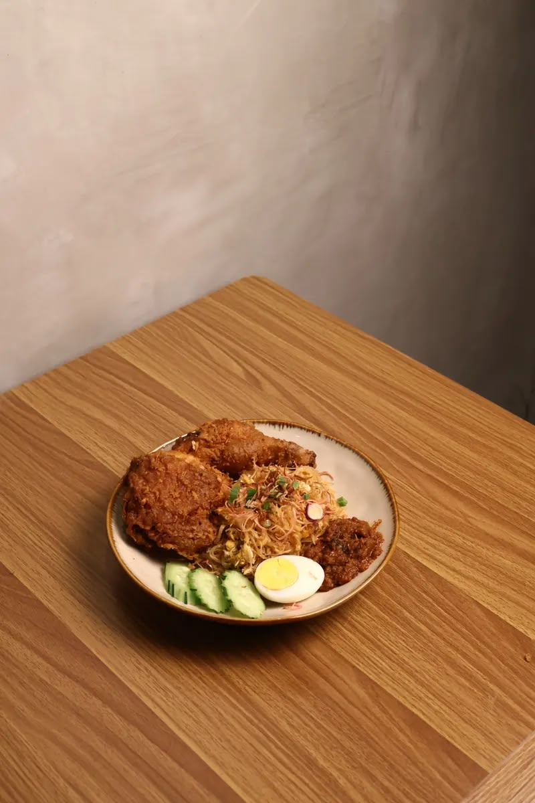

Dulu-Dulu Cafe
Welcome to Dulu-Dulu Cafe!
We promised you with the fastest services, delish foods and variety of choices to choose from.
Every dish is MSG-free and handcrafted with care.
Enjoy the authentic taste of traditional Malaysian cuisine
A Taste of Tradition, A Touch of Home"
🍜 Our Menu
- Nasi Lemak Ayam Goreng
- Crispy Spiced Fried Chicken with coconut rice, cucumber, peanuts, anchovies, hard-boiled egg and sambal.RM16.90
-
- Nasi Goreng Ayam Telur Mata
- Fragrant fried rice served with chicken and a sunny-side-up egg, savoury, hearty and filling. RM15.90
-
- Chendol Bingsu with Red Bean
- Coconut milk bingsu topped with homemade pandan cendol jelly, adzuki red bean and gula melaka. RM11.90
-
- Kaya Butter Toast
- Classic toast with pandan kaya and Anchor butter, nostalgic and comforting. RM8.90
-
🛒 How to Order
- Browse Our Menu
- Place Your Order
- Make Your Payment
- Enjoy Your Meal
🚧 Facilities
- Private Dining Space
- Free Wi-Fi
- Takeaway Services
- Free Parking Area
- Free Wi-Fi
- Prayer Room
What Our Customers Say
"The food make me think of home instantly! The Ayam Berempah is very flavourful and absolutely delicious. Definitely will repeat again!
⭐⭐⭐⭐⭐"
☕ Inside Our Cafe

Our Contact Information
40,
Jalan 52/18,
Bandar Baru PJ
Our Location:: Dulu-Dulu Cafe
© 2026 Dulu-Dulu Cafe & Friends